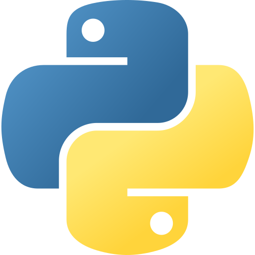
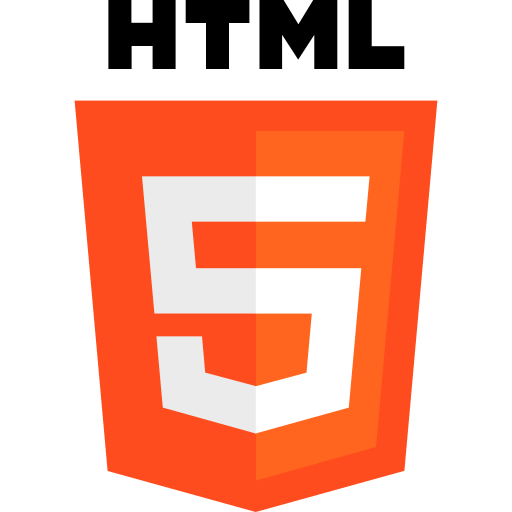
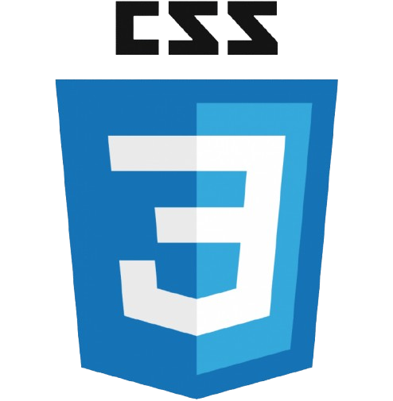
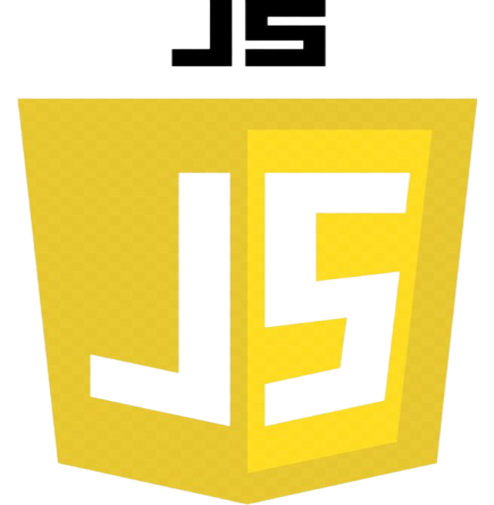

Hola, bienvenido
Soy Agustin Foglia
Tengo 20 años, vivo en Capital Federal y soy estudiante de Gestión de TI. Me gusta el desarrollo web, la computación y los desafíos creativos.
Contacto
Tengo 20 años, vivo en Capital Federal y soy estudiante de Gestión de TI. Me gusta el desarrollo web, la computación y los desafíos creativos.
Contacto
Soy Agustín Foglia, estudiante de la Licenciatura en Gestión de Tecnología de la Información en UADE.
Me apasiona el desarrollo web, la tecnología y los proyectos que combinan creatividad con funcionalidad.
Este portfolio refleja mi camino en la materia de Diseño y Desarrollo Web, donde puse en práctica lo aprendido.
Busco seguir creciendo profesionalmente y aplicar estos conocimientos en futuros desafíos.




A continuación, algunos proyectos que realicé con
JavaScript para la materia Diseño y Desarrollo Web.
Si querés verlos más a fondo, clikeá acá.
Una calculadora básica y funcional que puede sumar, restar, dividir, etc.
Una pequeña botonera de sonidos característicos interactiva de la fórmula 1.
Una breve galería de imágenes interactiva de algunas copas o trofeos de fútbol al rededor del mundo.